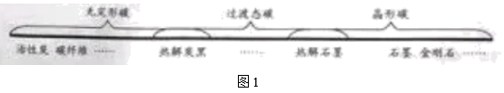
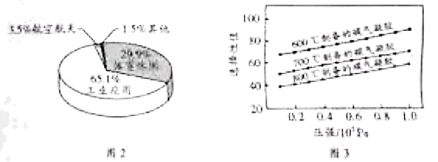

2021年北京市中考化学真题 · 科普阅读 第29题
29. 阅读下面科普短文。
碳元素是人类接触和利用最早的元素之一。由碳元素组成的单质可分为无定形碳、过液态碳和晶形碳三大类，如图1。

石墨是制铅笔芯的原料之一，在16世纪被发现后，曾被误认为是含铅的物质。直到18世纪，化学家将石墨与KNO3共熔后产生CO2，才确定了它是含碳的物质。
碳纤维既有碳材料的固有本质特性，又有纺织纤维的柔软可加工性，综合性能优异。目前，我国已形成碳纤维生产、碳纤维复合材料成型，应用等产业链，碳纤维复合材料应用领城分布如图2。
科学界不断研发出新型碳材料，碳气凝胶就是其中一种。碳气凝胶具有优良的吸附性能，在环境净化中发挥重要作用。我国科研人员在不同温度下制备了三种碳气凝胶样品，比较其对CO2的选择性吸附性能。他们在不同压强下测定了上述样品对混合气体中CO2吸附的选择性值，实验结果如图3。图中选择性值越高，表明碳气凝胶对CO2的选择性吸附性能越好。

随着科学技术 发展，碳材料的潜能不断被激发，应用领城越来越广泛。
发展，碳材料的潜能不断被激发，应用领城越来越广泛。
依据文章内容回答下列问题：
（1）金刚石属于______（填序号）。
A．无定形碳 B．过渡态碳 C．晶形碳
（2）石墨与KNO3共熔，能发生如下反应，配平该反应化学方程式：
__________________
（3）由图2可知，我国碳纤维复合材料应用占比最高的领域是______。
（4）判断下列说法是否正确（填“对”或“错”）。
①石墨是一种含铅的物质______。
②碳材料其有广阔的应用和发展前景______。
（5）对比图3中三条曲线，得到的实验结论是______。
【生产实际分析】